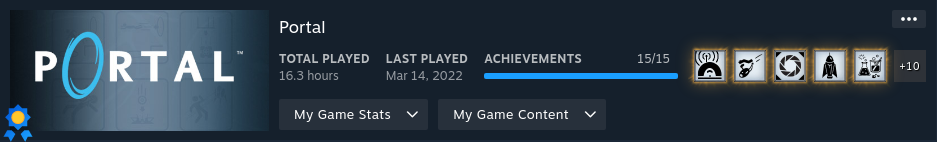

Why Portal?
My Partner was keen to watch me play this game. I had been putting off playing Portal for a long time, without any specific reason. Now, I've finally decided to give it a go, clearly inspired by my Partner to do so. Apart from the memes, my only interaction with Portal before this was in Killing Floor, which actually referenced Portal 2.
Story
You play as a human in a testing facility. A giant robot tests your ability to solve puzzles using a portal gun. While you're doing that, she's trying to kill you.
Gameplay Mechanics
It's certainly a puzzle game. I don't have much to say about it other than that. It's exactly what I thought a game named "Portal" would be. Even though I've never played Portal 2, from what I know about it, this seems more like a beta version of that game. It feels like this is the demo of a game you'd get before purchasing the actual game. You can tell there's some charm there, but it doesn't hit that much.
Final Thoughts
The game comes across more as a tutorial for something else. All the puzzles seemed really easy, and none required much thought to solve. The advanced modes felt like they should have been the standard difficulty level, as they were both enjoyable and challenging. Most of the game's difficulty lies in the challenges, which I'll discuss more in the completion section.
Should you complete Portal?
The achievements in this game are quite problematic. At times, they just don't work as intended. I tried multiple times to unlock a few, but they wouldn't register, which can be really frustrating. If you're determined, you'll eventually get them all, but unreliable achievements are a completionist's nightmare. The challenge mode achievements are particularly unenjoyable. The speedrun challenges start off okay, but then they require you to use glitches, which is a whole other issue. You wouldn't even know about these glitches without looking them up outside of the game.
Stats Gallery
Complete!
